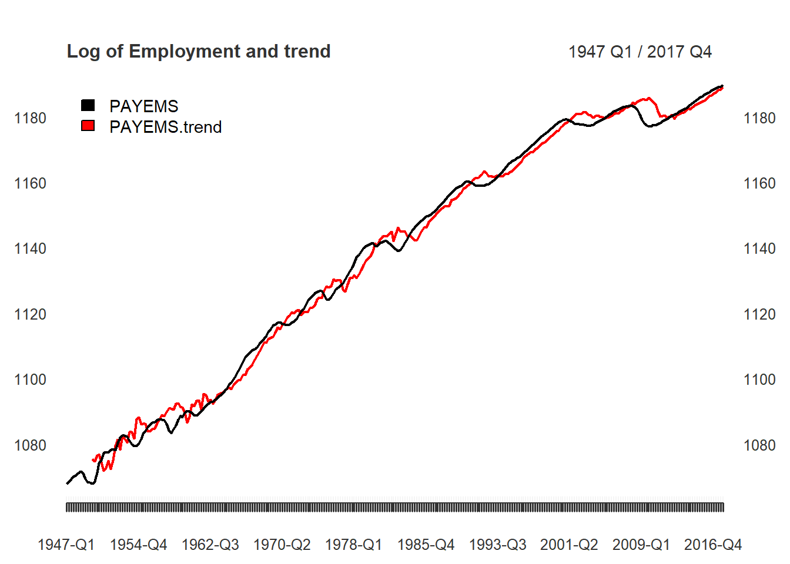
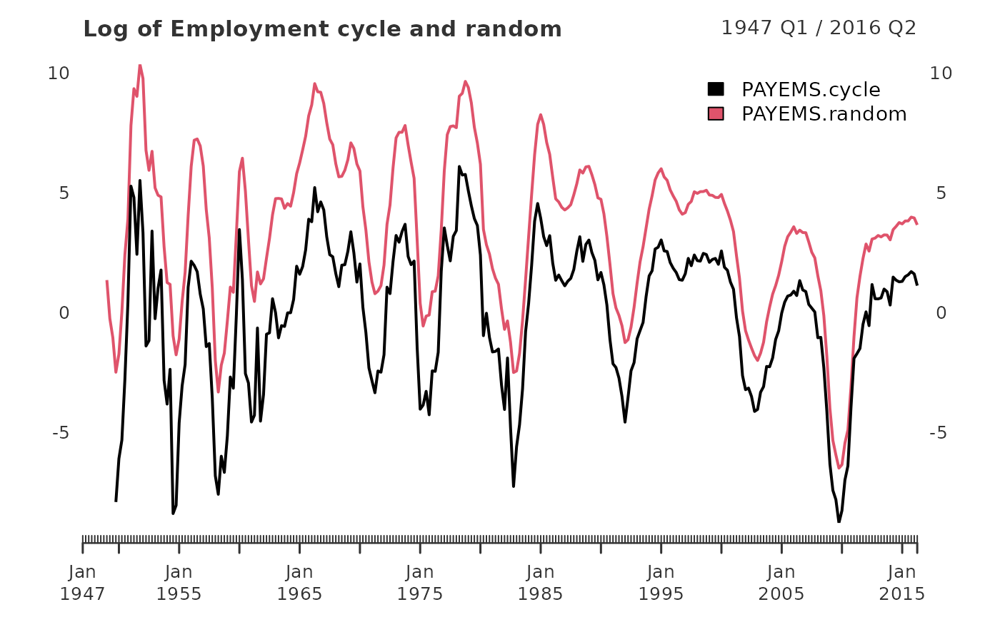

In the working paper titled “Why You Should Never Use the Hodrick-Prescott Filter”, James D. Hamilton proposes an approach to economic time series filtering which achieves goals the HP-Filter attempts, but ultimately does not produce.
The abstract offers an excellent introduction.
- The HP filter produces series with spurious dynamic relations that have no basis in the underlying data-generating process.
- Filtered values at the end of the sample are very different from those in the middle, and are also characterized by spurious dynamics.
- A statistical formalization of the problem typically produces values for the smoothing parameter vastly at odds with common practice, e.g., a value for \(\lambda\) far below 1600 for quarterly data.
- There’s a better alternative. A regression of the variable at date \(t + h\) on the four most recent values as of date \(t\) offers a robust approach to detrending that achieves all the objectives sought by users of the HP filter with none of its drawbacks.
The neverhpfilter package provides functions for implementing his solution. Hamilton (2017) <doi:10.3386/w23429>
Using an example of quarterly economic data, Hamilton suggests a linear model dependent on an h = 8 look-ahead period, which is independent of p = 4 lagged variables. An auto-regressive \(AR(p)\) model, with a \(t+h\) look-ahead twist, if you will. This can be expressed more specifically by:
\[y_{t+8} = \beta_0 + \beta_1 y_t + \beta_2 y_{t-1} +\beta_3 y_{t-2} + \beta_4 y_{t-3} + v_{t+8}\] \[\hat{v}_{t+8} = y_{t+8} + \hat{\beta}_0 + \hat{\beta}_1 y_t + \hat{\beta}_2 y_{t-1} + \hat{\beta}_3 y_{t-2} + \hat{\beta}_4 y_{t-3}\]
Which can be rewritten as:
\[y_{t} = \beta_0 + \beta_1 y_{t-8} + \beta_2 y_{t-9} + \beta_3 y_{t-10} + \beta_4 y_{t-11} + v_{t}\]
\[\hat{v}_{t} = y_{t} - \hat{\beta}_0 + \hat{\beta}_1 y_{t-8} + \hat{\beta}_2 y_{t-9} + \hat{\beta}_3 y_{t-10} + \hat{\beta}_4 y_{t-11}\]
library(xts)
library(knitr)
library(neverhpfilter)In this next section, I reproduce a few of Hamilton’s tables and graphs, to make sure the functions approximately match his results.
In the Appendix, Employment is plotted in the form of \(100 * log(\)PAYEMS\()\), or the All Employees: Total Non-farm series (Hamilton 44).
data(PAYEMS)
PAYEMS_qtr <- xts::to.quarterly(PAYEMS["1947/"], OHLC = FALSE)
log_Employment <- 100*log(PAYEMS_qtr)
employ_filtered <- yth_filter(log_Employment, h = 8, p = 4, family = gaussian)
main <- "Log of Employment and trend"
plot(employ_filtered[,1:2], grid.col = "white", legend.loc = "topleft", main = main)
The cycle component is of great interest. Here, it is graphed alongside a random walk representation, defined as the difference between the current observation \(t\), and the look-ahead parameter, \(h\) (Hamilton 44).
main <- "Log of Employment cycle and random walk"
plot(employ_filtered[,3:4], grid.col = "white", legend.loc = "topright", main = main)Turning the page, we find a similar graph of the cyclical component of \(100 * log(\)GDPC1\()\), or Real Gross Domestic Product, superimposed with it’s random walk representation. (Hamilton 45).
data(GDPC1)
log_RGDP <- 100*log(GDPC1)
gdp_filtered <- yth_filter(log_RGDP, h = 8, p = 4, family = gaussian)
main <- "Log of Real GDP cycle and random walk"
plot(gdp_filtered[,3:4], grid.col = "white", legend.loc = "topright", main = main)
When attempting to recreate the methods of others, one may perform surprisingly well “eyeballing” the authors graphs whilst comparing with thy own. Better still is a table presenting numerical estimations.
Fortunately, the Appendix displays just such a table (Hamilton 40). Continuing to work with Real GDP (GDPC1) and Employment (PAYEMS) data, I compare Hamilton’s original results for these series with those estimated by functions written for the neverhpfilter package.
Presenting Hamilton’s results, which are stored as a data.frame in this package.
data("Hamilton_table_2")
?Hamilton_table_2index <- rownames(Hamilton_table_2)=="GDP" | rownames(Hamilton_table_2)=="Employment"
kable(Hamilton_table_2[index,], align = 'l', caption = "Hamilton's results: table 2, pg. 40")| cycle.sd | gdp.cor | random.sd | gdp.rand.cor | Sample | |
|---|---|---|---|---|---|
| GDP | 3.38 | 1.00 | 3.69 | 1.00 | 1947-1/2016-1 |
| Employment | 3.09 | 0.85 | 3.32 | 0.85 | 1947-1/2016-2 |
I’ll replicate the table above, combining base R functions with earlier estimates of the yth_filter function on 100 * log of PAYEMS and GDPC1.
# Real Gross Domestic Product
GDP_f <- gdp_filtered[,c(3,4)]["/2016-3"]
GDP.St.Dev <- round(sd(GDP_f[,1], na.rm=TRUE), 4)
GDP.GDPCorr <- cor(GDP_f[,1], GDP_f[,1], use = "complete.obs")
GDP.Random <- round(sd(GDP_f[,2], na.rm=TRUE), 4)
GDP.RanCorr <- cor(GDP_f[,2], GDP_f[,2], use = "complete.obs")
Sample <- gsub(" ", "-", paste0(index(GDP_f[1,]), "/", index(GDP_f["2016"])))
GDP <- cbind(GDP.St.Dev, GDP.GDPCorr, GDP.Random, GDP.RanCorr, Sample)
colnames(GDP) <- names(Hamilton_table_2)
# Employment Situation
employ_f <- employ_filtered[,c(3,4)]["/2016-6"]
employ.St.Dev <- round(sd(employ_f[,1], na.rm=TRUE), 4)
employ.GDPCorr. <- round(cor(employ_f[,1], gdp_filtered[,3]["/2016-6"], use = "complete.obs"), 4)
employ.Random <- round(sd(employ_f[,2], na.rm=TRUE), 3)
employ.RanCorr. <- round(cor(employ_f[,2], gdp_filtered[,4]["/2016-6"], use = "complete.obs"), 4)
Sample <- gsub(" ","-",paste0(index(employ_f[1,]), "/", index(employ_f["2016-4"])))
employ <- cbind(employ.St.Dev,employ.GDPCorr.,employ.Random,employ.RanCorr., Sample)
colnames(employ) <- names(Hamilton_table_2)Finally, row-bind the original table with the new table and compare. They are nearly identical.
# Combined table
kable(rbind(Hamilton_table_2[index,], GDP, employ), align = 'l', caption = "Hamilton's table 2 compared with estimates from neverhpfilter::yth_filter")| cycle.sd | gdp.cor | random.sd | gdp.rand.cor | Sample | |
|---|---|---|---|---|---|
| GDP | 3.38 | 1 | 3.69 | 1 | 1947-1/2016-1 |
| Employment | 3.09 | 0.85 | 3.32 | 0.85 | 1947-1/2016-2 |
| GDPC1.cycle | 3.3826 | 1 | 3.68 | 1 | 1947-Q1/2016-Q1 |
| PAYEMS.cycle | 3.0918 | 0.8493 | 3.321 | 0.8493 | 1947-Q1/2016-Q2 |
The estimates generated with the neverhpfilter package are nearly identical to those displayed by Hamilton(2017). If one has the use case, the collection of generalized functions will estimate higher frequency time series as well as error distributions other than Gaussian. In addition to consulting the paper which inspired this package, documention of each function is highly recommended reading.